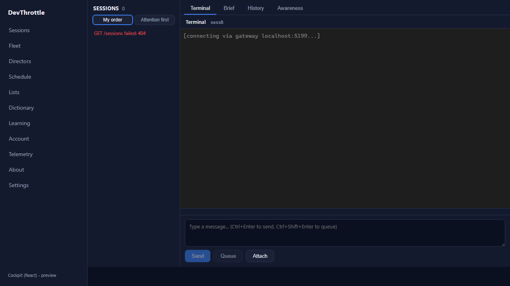

PR: #1036 Branch: issue-1029-xterm-lifecycle Verdict: PASS - all acceptance criteria met, independently reproduced
This report is the QA Agent's OWN verification. The Developer Agent's report was read only as context; every result below was reproduced from scratch in a fresh isolated worktree (own build, own Vite dev server, own Playwright harness). The regression test was proven to genuinely fail on the pre-fix code and pass on the fix.
| Criterion | Result | Independent evidence |
|---|---|---|
| Loading a session and rapidly switching between two sessions produces ZERO uncaught page errors (a check that fails on the current code and passes after). | PASS |
Regression test proven genuine. With the fixed interactive.ts in place,
vitest run src/terminal/interactive.test.ts -> 14/14 passed. Swapping in the
UNFIXED interactive.ts from main (test unchanged) -> 3 tests fail
with the exact TypeError: Cannot read properties of undefined (reading 'dimensions'). The test is not
trivially passing.LIVE reproduction. The real Cockpit React app (Vite dev server, React 18 StrictMode active) was driven by an independent Playwright harness through 8 load/switch cycles (roster -> /session/sessA -> roster -> /session/sessB, alternating), with a pageerror uncaught-error collector installed:
OLD code: 9 uncaught 'dimensions' errors, FIXED code: 0.
|
| The terminal still renders, types, and reconnects correctly. | PASS |
Live: the terminal host mounted on all 8 cycles and rendered the bounded-reconnect status line
[connecting via gateway localhost:5199...] (see screenshot). Typing (raw-byte forward with
appendEnter:false), keystroke ordering, and bounded reconnect stay covered green by the existing unit tests
(14/14).
|
| Full build gate clean (cockpit build, lint, Gateway RunCockpitBuild, cc-director.sln). | PASS | See build gate below - all four rebuilt from the PR branch with 0 errors. |
OLD code (main interactive.ts): {"label":"OLD","dim":9,"all":9,"cycles":8,"mounts":8,"mountedAtEnd":true, ...}
FIXED code: {"label":"FIXED","dim":0,"all":0,"cycles":8,"mounts":8,"mountedAtEnd":true,"sample":[]}
Harness: the real apps/cockpit Vite dev server (React StrictMode active), driven by Python Playwright
(headless Chromium). An uncaught-error collector (Playwright pageerror, which surfaces both window
error and unhandledrejection) counts errors across 8 alternating load/switch cycles -
covering both the "every session load" and "every session switch" paths of the defect. The QA harness result
(9 vs 0) independently confirms the developer's finding (16 vs 0); the exact count varies with headless timing,
the conclusion - non-zero on old, zero on fixed - does not.

| Gate | Command | Result |
|---|---|---|
| Regression + unit tests | vitest run src/terminal/interactive.test.ts | 14 passed |
| Regression test on OLD code | same test, main interactive.ts | 3 failed with exact 'dimensions' TypeError (proves genuineness) |
| Cockpit build | npm run build --workspace @devthrottle/cockpit | built (tsc + vite) |
| Lint | npm run lint (root eslint) | clean |
| Gateway + cockpit embed | dotnet build CcDirector.Gateway -p:RunCockpitBuild=true | 0 Warning, 0 Error |
| Full solution | dotnet build cc-director.sln | 0 Warning, 0 Error |
No drift. A client-side lifecycle correctness fix inside an existing container
(packages/client-core terminal engine, consumed by the Cockpit). No architecture boundary, no
security posture, no docs/cencon/ manifest change; the engine still talks only same-origin to the
Gateway. No blocking security rule touched.
VERIFIED - all acceptance criteria met. Approved for squash-merge to main.